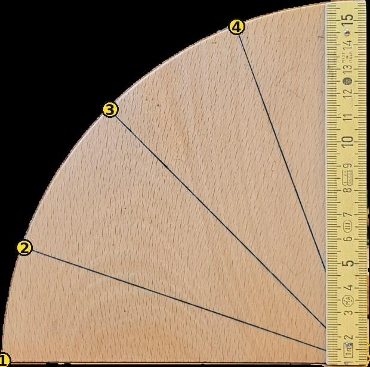

Nalagam OpenCV…
Začetek: kamera se odpre šele s pritiskom na gumb.
Zaženi kamero
Označi 4 točke
Reset
Prikaži črte

Označi 4 točke po vrsti.
1. Zaženi kamero. 2. Celoten leseni četrtkrog naj bo v kadru. 3. Označi štiri točke.
Brez markerja · OpenCV.js · ročna začetna kalibracija